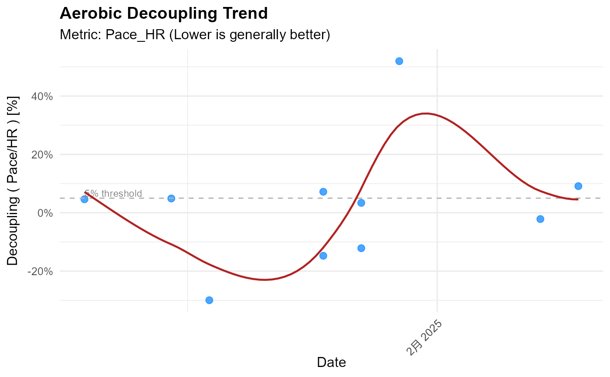

Visualizes the trend of aerobic decoupling over time.
A valid Strava token from `rStrava::strava_oauth()`. Required unless `decoupling_df` is provided.
Type(s) of activities to analyze (e.g., "Run", "Ride").
Metric basis: "Pace_HR" or "Power_HR".
Optional. Analysis start date (YYYY-MM-DD string or Date). Defaults to ~1 year ago.
Optional. Analysis end date (YYYY-MM-DD string or Date). Defaults to today.
Minimum activity duration (minutes) to include. Default 45.
Max number of recent activities to fetch/analyze when `stoken` is used. Default 50.
Add a smoothed trend line (`geom_smooth`)? Default `TRUE`.
Smoothing method for trend line (e.g., "loess", "lm"). Default "loess".
Optional. A pre-calculated data frame from `calculate_decoupling`. If provided, `stoken` and other calculation parameters are ignored. Must contain 'date' and 'decoupling' columns.
Optional. Column name for grouping/faceting (e.g., "athlete_id").
Optional. Named vector of colors for groups.
A ggplot object showing the decoupling trend.
Plots the aerobic decoupling trend over time. Uses pre-calculated data or calls `calculate_decoupling` (can be slow).
Plots decoupling percentage ((EF_1st_half - EF_2nd_half) / EF_1st_half * 100). Positive values mean HR drifted relative to output. A 5 used as reference. If `decoupling_df` is not provided, calls `calculate_decoupling` first (can be slow and hit API limits).
# Example using pre-calculated sample data
data("athlytics_sample_decoupling", package = "Athlytics")
#> Warning: data set 'athlytics_sample_decoupling' not found
p <- plot_decoupling(athlytics_sample_decoupling)
#> Generating plot...
print(p)
#> `geom_smooth()` using formula = 'y ~ x'

if (FALSE) { # \dontrun{
# Example using real data (requires authentication)
# NOTE: The following rStrava::strava_oauth call is a placeholder.
# You MUST replace placeholders with your actual Strava API credentials.
tryCatch({
stoken_example <- rStrava::strava_oauth(
app_name = "YOUR_APP_NAME_PLACEHOLDER",
app_client_id = "YOUR_CLIENT_ID_PLACEHOLDER", # CORRECTED
app_secret = "YOUR_CLIENT_SECRET_PLACEHOLDER", # CORRECTED
cache = TRUE,
app_scope = "activity:read_all" # Recommended scope
)
if (inherits(stoken_example, "Token2.0")) {
message("Placeholder stoken_example created for athlytics examples.")
# Example 1: Plot Decoupling trend for Runs (last 6 months)
# This first calculates the data, then plots it.
message("Calculating decoupling for Runs (last 6 months) - may take a moment...")
decoupling_runs_6mo <- tryCatch({
calculate_decoupling(
stoken = stoken_example,
activity_type = "Run",
decouple_metric = "Pace_HR",
date_range = c(format(Sys.Date() - lubridate::months(6), "%Y-%m-%d"),
format(Sys.Date(), "%Y-%m-%d")),
max_activities = 5 # Keep low for example
)
}, error = function(e_calc) {
message(paste("Could not calculate decoupling data in example:", e_calc$message))
return(dplyr::tibble()) # Return empty tibble on error
})
if (nrow(decoupling_runs_6mo) > 0 && "decoupling" %in% names(decoupling_runs_6mo)) {
p_runs_6mo <- plot_decoupling(decoupling_df = decoupling_runs_6mo, activity_type = "Run")
print(p_runs_6mo)
} else {
message("No decoupling data for Runs (last 6 months) to plot, or calculation failed.")
}
# Example 2: Plot Decoupling trend for Rides
# decoupling_rides <- calculate_decoupling(
# stoken = stoken_example,
# activity_type = "Ride",
# decouple_metric = "Power_HR",
# max_activities = 5
# )
# if (nrow(decoupling_rides) > 0 && "decoupling" %in% names(decoupling_rides)) {
# p_rides <- plot_decoupling(decoupling_df = decoupling_rides, activity_type = "Ride")
# print(p_rides)
# } else {
# message("No decoupling data for Rides to plot, or calculation failed.")
# }
# Example 3: Plot Decoupling trend for multiple Run types (no trend line)
# decoupling_multi_run <- calculate_decoupling(
# stoken = stoken_example,
# activity_type = c("Run", "VirtualRun"),
# decouple_metric = "Pace_HR",
# max_activities = 5
# )
# if (nrow(decoupling_multi_run) > 0 && "decoupling" %in% names(decoupling_multi_run)) {
# p_multi_run <- plot_decoupling(
# decoupling_df = decoupling_multi_run,
# activity_type = c("Run", "VirtualRun"),
# add_trend_line = FALSE
# )
# print(p_multi_run)
# } else {
# message("No decoupling data for multi-run types to plot, or calculation failed.")
# }
} else {
message("Failed to create placeholder stoken for plot_decoupling examples.")
}
}, error = function(e_auth) {
message(paste("Error during rStrava authentication in example:", e_auth$message))
})
} # }